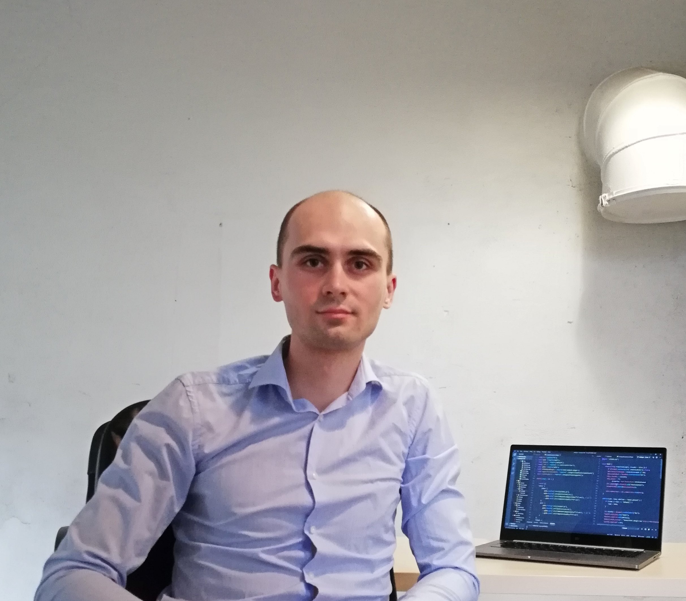

Andrew Ribaltovsky
About.js
export const getDeveloperInfo = () => ({
name: 'Andrew Ribaltovsky',
specialization: 'frontend',
stack: {
htmlPreprocessors: ['pugjs'],
cssPreprocessors: ['postcss', 'scss'],
taskRunners: ['gulp'],
bundlers: ['webpack'],
uiFrameworks: ['react'],
stateManagment: ['redux'],
workflow: ['github', 'gitlab'],
},
interests: ['nodejs', 'css grid', 'css variables', 'web performance'],
jobStatus: 'Looking for a good job'
});
Developing promo section of the site with the opportunity collect, print and download your set of gifts
Developing promo section of the site with the opportunity collect, print and download your set of gifts
Developing B2B section of the site about new franchasing service
Developing B2B section of the site about new franchasing service
Coding responsive html-template by given design and turn it into website based on WordPress
Coding responsive html-template by given design and turn it into website based on WordPress
Turning all sections desktop version of the site into fully adaptive pages
Turning all sections desktop version of the site into fully adaptive pages
Designing and developing adaptive product listing template and filter functionality for it
Designing and developing adaptive product listing template and filter functionality for it
Developing multi page AMP-version of the SEO-agency site
Developing multi page AMP-version of the SEO-agency site
Coding adaptive html-templates by given designs and turn it into website based on WordPress
Coding adaptive html-templates by given designs and turn it into website based on WordPress